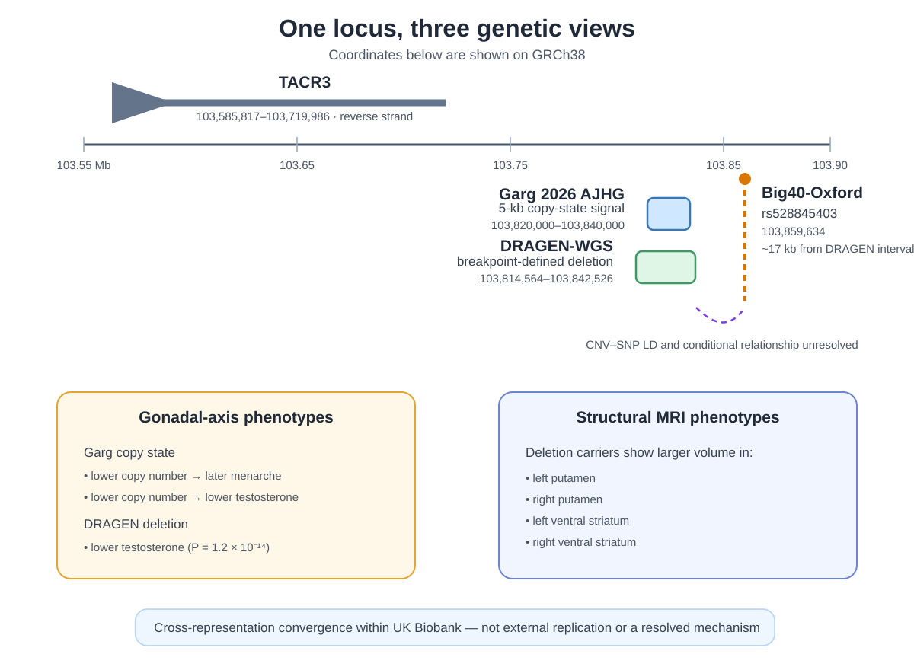

A non-coding deletion at the intersection of the gonadal axis and striatal morphology
A structural-neuroimaging reading of DRAGEN-WGS, Garg 2026 AJHG, and Big40-Oxford.
Some genetic findings arrive as headline results. Others sit quietly in supplementary tables until they are read from a different angle. A small deletion near TACR3 feels like the second kind.
At first glance, it looks like a reproductive-hormone locus. In the UK Biobank CNV PheWAS from Garg 2026 AJHG, lower copy number in a short non-coding interval near TACR3 is associated with later menarche and lower testosterone. That fits established biology: damaging TAC3 or TACR3 variants can disrupt the central control of reproduction, and a nearby common variant has previously been reported as a male-specific testosterone signal.
But the same interval also carries a remarkably coherent structural MRI pattern: larger left and right putamen, and larger left and right ventral striatum. Read through a neuroimaging lens, this becomes an underdeveloped neuroendocrine–striatal hypothesis hidden inside a PheWAS spanning thousands of phenotypes.
The story becomes more convincing when the resources are placed side by side. DRAGEN-WGS from Zou 2026 Nature recovers an almost identical deletion, the same four MRI phenotypes and the same direction of effect. Big40-Oxford then shows that the same genomic neighbourhood is visible under a common-variant representation of the UK Biobank imaging data. None of this resolves causality. Together, however, the three views identify a signal worth separating from the surrounding PheWAS noise.

The Garg and DRAGEN intervals overlap closely on GRCh38. The Big40 variant maps approximately 17 kb beyond the DRAGEN interval, but the CNV–SNP relationship has not been resolved by imaging-specific conditional analysis.
One locus, three views
| Evidence | Garg 2026 AJHG | DRAGEN-WGS — Zou 2026 Nature | Big40-Oxford |
|---|---|---|---|
| Variant | chr4:103,820,000–103,840,000, GRCh38; 5-kb copy-state model | chr4:103,814,564–103,842,526, GRCh38; deletion-dominant model | rs528845403; GRCh38 position 103,859,634 |
| Carriers | Copy-state series rather than one breakpoint-defined event | 8,092 NFE deletion carriers overall; 753 in the MRI analysis | Minor-allele frequency approximately 1% |
| Left putamen | Lower copy number → larger volume; P ≈ 2.1 × 10−14 | β = 0.292; P = 6.5 × 10−16 | β = 0.28; P = 8.5 × 10−11 |
| Right putamen | Lower copy number → larger volume; P ≈ 1.3 × 10−14 | β = 0.282; P = 5.5 × 10−15 | β = 0.26; P = 8.5 × 10−10 |
| Left ventral striatum | Lower copy number → larger volume; P ≈ 2.0 × 10−13 | β = 0.239; P = 4.1 × 10−13 | β = 0.30; P = 5.3 × 10−12 |
| Right ventral striatum | Abnormal copy state associated with volume; P ≈ 1.4 × 10−12 | β = 0.230; P = 5.5 × 10−12 | β = 0.28; P = 9.5 × 10−11 |
| Endocrine signal | Later menarche, P ≈ 7.1 × 10−39; lower testosterone, P ≈ 4.8 × 10−15 | Lower testosterone, β = −0.056; P = 1.2 × 10−14 | rs528845403 has previously been reported as a testosterone-associated variant near TACR3 |
| Unresolved relationship | Zou reports substantial LD between the deletion and nearby hormone-associated SNPs (maximum reported R2 ≈ 0.785), but rs528845403 was not included in the reciprocal conditional table. The imaging signals therefore remain unconditioned against each other. | ||
Effect estimates are shown as reported within each resource and should not be compared directly across models without allele and phenotype-scale harmonization.
Why this pattern is interesting
The strongest feature is anatomical coherence. The MRI associations are not scattered across unrelated regions. They fall bilaterally on the putamen and ventral striatum. The deletion also has a clear endocrine phenotype, and the nearby common variant has prior links to testosterone. That combination does not establish a developmental pathway from gonadal hormones to striatal volume, but it makes the joint signal harder to dismiss as a random PheWAS by-product.
Highlighted here: the same structural interval carries a bilateral striatal MRI pattern recovered under two different CNV representations, with a nearby Big40 common-variant signal.
Not established: that the deletion acts through TACR3, that hormones mediate the MRI association, or that the CNV is causal for the Big40 signal.
The Human Protein Atlas detects TACR3 RNA across several human brain regions, including basal ganglia, and places it in a neurotransmitter-signalling expression cluster. This provides reasonable anatomical context, but it is supporting annotation rather than functional evidence for the deletion.
What the three resources add
Garg makes difficult copy-number states visible
Garg estimates copy number across consecutive 5-kb windows. From a neuroimaging perspective, the value is access to small and multiallelic copy-number polymorphisms, recurrent rearrangements, segmental-duplication-rich loci, chromosome X and some mosaic events. These are regions where a lead SNP or a single breakpoint-defined CNV may be an incomplete representation of the underlying structural haplotype.
DRAGEN-WGS turns the regional signal into an interpretable event
Zou starts from deletion and duplication calls larger than 10 kb and adds carrier counts, explicit genetic models, gene-level collapsing, protein-truncating variants, pQTLs and CNV–SNP conditioning. At this locus, the central reassurance is technical: a discrete deletion model recovers the same four MRI traits and the same effect direction as Garg’s regional copy-state analysis. This is cross-pipeline convergence, not external replication, because the studies draw heavily on the same UK Biobank participants.
Big40 supplies the common-variant imaging context
Big40-Oxford shows that the same genomic neighbourhood is visible through common-variant imaging GWAS. The nearby rs528845403 association recovers the same four striatal phenotypes. The important question is therefore no longer whether the region matters for striatal morphology, but what genetic unit is being captured: the deletion, the SNP, or a larger haplotype containing both.
Other difficult loci—including segmental-duplication and chromosome-X signals—similarly illustrate that the Garg and DRAGEN approaches cover partly different classes of structural variation. The broader lesson is that some imaging loci may be better understood as structural haplotypes rather than as isolated lead SNPs.
What the molecular layers do—and do not—resolve
Zou’s pQTL and LD analyses provide the right framework for moving beyond association. The exact deletion is reported as a trans-pQTL for circulating SDC1, but not as a cis-pQTL for TACR3. That result is interesting, yet it does not identify the effector gene for the MRI phenotype. A membrane receptor may also be poorly represented by a plasma-protein assay, and the relevant regulatory effect could be tissue- or developmental-stage-specific.
The LD results are equally important. The deletion is substantially tagged by some nearby hormone-associated SNPs, but the TACR3-region MRI associations were not included in the formal reciprocal conditional analysis. A dedicated follow-up would need to jointly model the CNV, rs528845403 and the much stronger nearby SLC39A8 subcortical-volume locus. Until then, “structural contribution” is a hypothesis rather than a settled explanation.
Caveats that matter
- Shared cohort: agreement across Garg, DRAGEN-WGS and Big40 reflects different analytical representations of UK Biobank, not independent cohort replication.
- Imaging specificity: the CNV PheWAS models were not designed as dedicated neuroimaging GWAS. Intracranial volume, global subcortical scaling and richer imaging confound adjustment could change the apparent regional specificity.
- Candidate gene: the interval is positioned upstream of TACR3 on its reverse strand, but nearest-gene annotation does not establish the regulated transcript.
- LD and conditioning: the relationship among the deletion, rs528845403 and nearby SLC39A8 signals remains unresolved.
- Biological interpretation: joint endocrine and MRI associations do not demonstrate that hormonal changes mediate the striatal phenotype.
The take-home point
A small non-coding deletion near TACR3 sits at the intersection of gonadal traits and bilateral striatal morphology. The signal becomes visible because three resources represent the same locus differently: regional copy state, a breakpoint-defined deletion and a common variant. Their convergence does not solve the mechanism, but it turns a buried PheWAS result into a precise and testable neuroimaging-genetics hypothesis.
Notes and references
- Garg et al. (2026, AJHG): A phenome-wide association study of CNVs genotyped from genome sequencing read depth in the UK Biobank.
- Zou et al. (2026, Nature): Phenome-wide analysis of copy number variants in 470,727 UK Biobank genomes. Public results are available through the AstraZeneca PheWAS Portal and CGR bulk-download site.
- Smith et al. (2021, Nature Neuroscience): An expanded set of genome-wide association studies of brain imaging phenotypes in UK Biobank. Results are available through Big40-Oxford.
- Topaloglu et al. (2009, Nature Genetics): TAC3 and TACR3 mutations in familial hypogonadotropic hypogonadism reveal a key role for neurokinin B in the central control of reproduction.
- Ruth et al. (2020, Nature Medicine): common-variant analysis identifying rs528845403 near TACR3 among male-specific testosterone signals.
- Human Protein Atlas: brain-region RNA-expression context for TACR3.
- Note: This is an exploratory synthesis of public summary results, not a formal replication or causal analysis.